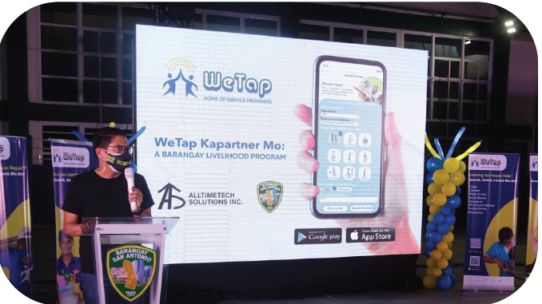
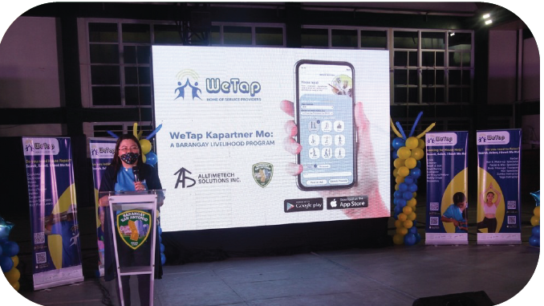

Alltimetech Solutions, Inc. successfully launched their first mobile application, the new and improved WeTap Mobile App – Home of Service Providers in Barangay San Antonio, Pasig, Metro Manila last July 30, 2021. It has been a long journey, full of challenges due to the pandemic, but it did not stop the fearless young creative team of the company.
In collaboration with Barangay Captain Thomas Raymund Lising, Alltimetech Solutions Inc. organized, WeTap, Kapartner Mo: A Livelihood Program that will address the manpower needs of every household and small and medium enterprises (SME'S) requirements of the barangay. Since this is a mobile application, the registered service providers of the barangay in WeTap have an advantage and will lead in providing home services to the residents of Pasig and neighboring cities.

The event was honored by the presence of Kap Raymund, as fondly called by his constituents, who gave an inspiring opening remark. It was followed by KGD Norma Medalla, the Co-Chair Livelihood Committee of the Barangay, KGD Justin Galang, KGD Jun Sistoso and SK Chairman Arjay Demos. They were later called as the modern heroes by the event hosts, Kim and Isay.

While the heart felt speech of Alltimetech Solutions Inc.’s President Libertine Pasion-Xavier, gave encouraging words to all Filipinos to embrace the use of WeTap as part of the new normal and asked the audience to give a chance to the skilled workers to find work to sustain their daily needs, and she further said, “For every booking, you help a family get through the day.”
She said that this App was developed and designed by Filipinos and proudly stated, “Tatak Pinoy Ito!” and she commended the athletes and artists that gave honor to our country and hoping that WeTap will someday follow that direction. She ended her speech acknowledging the talents of Pinoy with, “Ang galing ng Pinoy!”